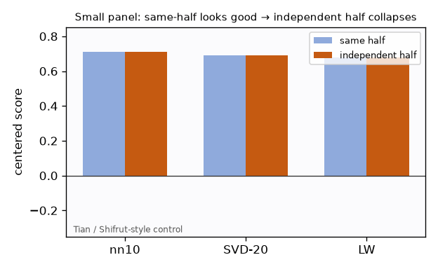

represolve
Replicate-resolved masked-gene completion: regime-dependent rankings, pre-scoring routing, and a calibrated keloid case study. Installable FAIR resource for *iMeta* Research Article submission.
Replicate-resolved masked-gene completion: regime-dependent rankings, pre-scoring routing, and a calibrated keloid case study. Installable FAIR resource for *iMeta* Research Article submission.
Same-partition scores can look strong while independent halves collapse — and the winner identity flips with regime.

Reproduce locally:
pip install -U represolve==1.0.3
# from the tagged source tree:
python demo/run_demo.py| Claim | Not a claim |
|---|---|
| Masked-completion rankings reverse with reliability + density | Universal best model |
Route before hidden-gene scoring (obs_agreement + d_cos10) | Nested-CV leakage-free tuning |
| Pre-registered external zero regret in HepG2/Jurkat | Wet-lab-validated keloid targets |
| Hypertrophic-scar AUC 0.50 disclosed | Keloid-specific signature |
| Resource | Independent measurement half? | Pre-scoring route? |
|---|---|---|
| Systema / AmbiModBench / scPerturBench | No / partial | No |
| represolve | Guide / gem / batch / biological | Yes |